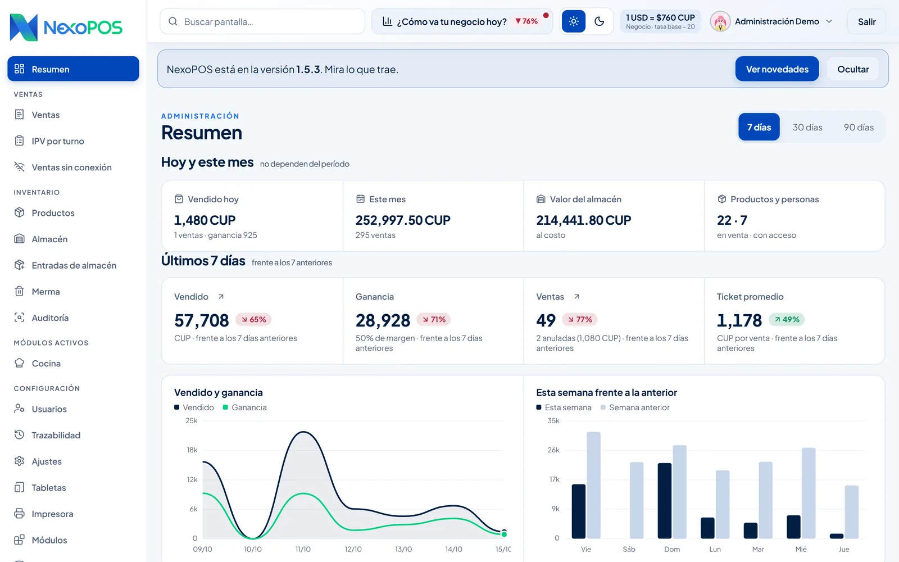
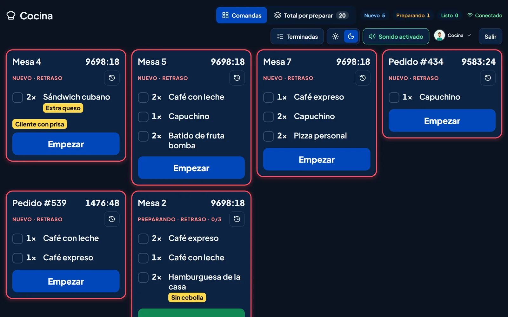
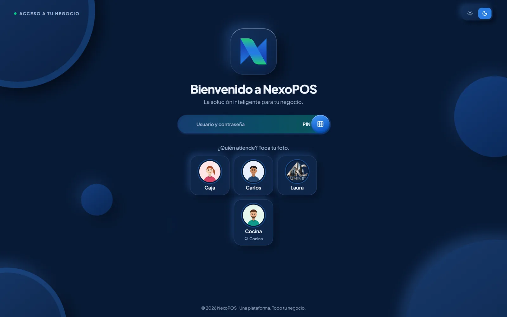

Vende rápido. Cuadra tu almacén.
Sin depender de Internet.
Cierra el turno
sabiendo cuánto ganaste.
NexoPOS reúne caja, cocina, inventario y administración en un sistema que se instala en tu negocio. Cobra en CUP y USD, descuenta cada venta del almacén y mira tus ganancias del día sin hacer cuentas a mano.
Gratis y sin compromiso · Eliges día y hora al terminar


- CUP y USDCon la tasa que tú decides
- Sin InternetTrabaja en tu red local
- PC, tableta o móvilDesde el navegador
- Tus datos, en tu negocioGuardados en tu propia PC
¿Te suena alguna de estas?
Son los problemas que más tiempo y dinero cuestan en un negocio que cobra y lleva el almacén a mano.
-
El almacén no cuadra
Lo que dice la libreta no coincide con lo que hay en el estante.
Con NexoPOS cada venta descuenta del almacén. Entradas, merma y auditorías de inventario quedan registradas, con alertas de poco stock.
-
Errores al cobrar
Precios de memoria, dos monedas y el cambio sacado con la calculadora.
Con NexoPOS buscas o escaneas el producto y cobras en efectivo, transferencia, dólares o mixto, con el cambio calculado.
-
No sabes cuánto ganas
Vendes todo el día, pero la ganancia real aparece a fin de mes… si aparece.
Con NexoPOS el Resumen muestra lo vendido hoy y en el mes, la ganancia, el margen y el ticket promedio frente al período anterior.
-
No puedes estar en todas partes
Cuando no estás, no sabes quién vendió qué ni cómo cerró el turno.
Con NexoPOS cada persona entra con su usuario o PIN. Turnos con apertura y cierre, IPV por turno y trazabilidad de quién hizo cada cosa.
-
Papelitos y cuentas a mano
Comandas en papel, la cuenta de cada mesa en la cabeza y el cierre en la libreta.
Con NexoPOS cada mesa tiene su cuenta, las comandas llegan a la tableta de cocina y el IPV del turno se actualiza solo.
-
¿Quieres ver cómo se resuelve en tu negocio?
Te lo mostramos en una demostración con tus productos.
Solicitar demostración
Así se ve NexoPOS
por dentro.
Capturas reales de NexoPOS 1.5 con datos de demostración. Elige una pantalla.

- Vendido hoy y en el mes
- Ganancia y margen
- Ticket promedio frente al período anterior
- Gráficos de 7, 30 o 90 días

- Busca o escanea el código de barras
- Efectivo, transferencia, dólares o mixto
- Turno abierto con ventas y total
- Verificar inventario y cerrar turno

- Foto, categoría y código de barras
- Existencias por producto
- Stock mínimo con alertas
- Entradas, merma y auditoría

- Mesas y pedidos con sus notas
- Nuevo, Preparando y Listo
- Total por preparar
- Aviso con sonido

- PIN con foto para caja y cocina
- Usuario y contraseña para administración
- Cada uno ve solo lo que le toca
- Tema claro u oscuro
¿Quieres verlo con tus productos? Solicita una demostración
Se instala en tu negocio.
Trabaja aunque no haya Internet.
- 1
Instalas NexoPOS en una PC
Un instalador para Windows 10 u 11 (64 bits) con todo incluido. En esa PC quedan el programa y tus datos.
- 2
Configuras tu negocio
Productos con foto y precio, categorías, la tasa del dólar, los usuarios con su PIN y los módulos que vas a usar.
- 3
Conectas cajas y tabletas
Los demás equipos abren NexoPOS en el navegador, por el Wi‑Fi o la red local del negocio.
- 4
Vendes y controlas
Cada venta descuenta del almacén. Al cerrar el turno tienes el IPV, y en Administración, tus ganancias.
 PC con NexoPOS
PC con NexoPOSLa PC donde está instalado NexoPOS debe estar encendida para que los demás equipos trabajen. Internet solo hace falta, si quieres, para buscar actualizaciones y tomar la tasa de referencia de elTOQUE.
Activa solo lo que
tu negocio usa.
La caja, el inventario y la administración son la base. Los módulos se activan cuando los necesitas.
De la mesa a la cocina, sin papelitos.
- Una cuenta por mesa hasta el cobro
- Comandas en la tableta de cocina, con notas como «Sin cebolla»
- Fichas de costo para saber cuánto te cuesta cada producto
- Cobro en CUP y USD con la tasa de tu negocio

Un inventario que cuadra.
- Lector de código de barras y códigos generados para lo que no lo trae
- Stock mínimo por producto y alertas de poco stock
- Entradas de almacén, merma y auditoría de inventario
- Valor del almacén al costo, siempre a la vista
Vallas, turnos y equipos en orden.
- Módulo Fregadora para lavado de autos, que se activa en Administración → Módulos
- Vallas, turnos y equipos de trabajo
- La misma caja, inventario y administración del resto de NexoPOS
Te mostramos el módulo funcionando durante la demostración.
Ver la demo para mi fregadora- MesasUna cuenta por mesa
- CocinaComandas en tableta
- FregadoraVallas, turnos y equipos
- Ventas sin conexiónLa caja no se detiene
- TabletasMás puntos de venta
- ImpresoraTickets y comandas
Un turno con NexoPOS,
de principio a fin.
Del acceso con PIN al cierre del turno, en pantallas reales.

¿Prefieres verlo en vivo y preguntar lo que quieras? Agenda tu demostración
Tus datos se quedan
en tu negocio.
En tu propia PC
La base de datos se guarda en el equipo del negocio y solo atiende a ese equipo: no se publica en la red.
Red local protegida
El acceso a NexoPOS se permite solo desde redes privadas y la red local de tu negocio.
Actualizaciones firmadas
NexoPOS comprueba la firma y el contenido de cada actualización antes de instalarla. Tú decides cuándo.
Copia antes de actualizar
Antes de cambiar el programa se respaldan la base, la configuración y los archivos. Tus datos se conservan.
Lo que suelen preguntarnos.
¿No ves tu pregunta? Escríbenos por WhatsApp o pregúntala en la demostración.
¿NexoPOS necesita Internet para funcionar?
No. Vender, cobrar, consultar el inventario y trabajar con fichas de costo funciona en la red local de tu negocio. Internet solo se usa, si quieres, para buscar actualizaciones y para tomar la tasa de referencia de elTOQUE. También puedes actualizar con un archivo y fijar la tasa a mano.
¿Qué equipos necesito?
Una PC con Windows 10 u 11 de 64 bits, donde se instala NexoPOS y que debe estar encendida mientras trabajas. Cajas, tabletas y teléfonos se conectan a ella desde el navegador, dentro de la misma red. El lector de código de barras y la impresora de tickets son opcionales.
¿Cómo es la instalación?
NexoPOS tiene un instalador para Windows que trae todo lo necesario: no tienes que instalar bases de datos ni otros programas. Al terminar se crea el usuario administrador y desde ahí configuras productos, usuarios y tasa. En la demostración te explicamos cómo sería en tu negocio.
¿Puedo cobrar en CUP y en USD?
Sí. Efectivo, transferencia, dólares o pago mixto, con el cambio calculado. La tasa la decide tu negocio: puedes fijarla a mano o tomar como referencia la de elTOQUE.
¿Qué pasa si se apaga la PC o se va la corriente?
Los demás equipos necesitan que la PC con NexoPOS esté encendida. Al volver a encenderla, NexoPOS arranca solo y tus datos se conservan. Para que la caja no se detenga si pierde la conexión con la PC existe el módulo opcional Ventas sin conexión.
¿Cómo se actualiza?
Desde Administración → Actualizaciones, por Internet o con un archivo que puedes llevar en una memoria USB. Antes de instalar, NexoPOS comprueba la firma del paquete y hace una copia de tus datos.
¿Quién puede ver mis ventas?
Solo las personas a las que das acceso. El administrador entra con usuario y contraseña; cajeros y cocina, con su PIN, y cada uno ve solo lo que le toca. Te recomendamos guardar también copias de seguridad en otro disco.
¿Cuánto cuesta y qué incluye el soporte?
Depende de los módulos y de cuántos equipos vas a usar. En la demostración vemos lo que necesita tu negocio y te explicamos las condiciones de instalación, soporte y actualizaciones antes de que decidas.
¿Cómo es la demostración?
Respondes cinco preguntas rápidas y eliges día y hora. A esa hora te contactamos por WhatsApp para enseñarte NexoPOS y resolver tus dudas. Es gratis y sin compromiso, y puedes cambiar la hora o cancelar desde el enlace de tu reserva.
Mira NexoPOS funcionando con los productos de tu negocio.
Cinco preguntas, eliges día y hora, y te contactamos por WhatsApp a la hora acordada.